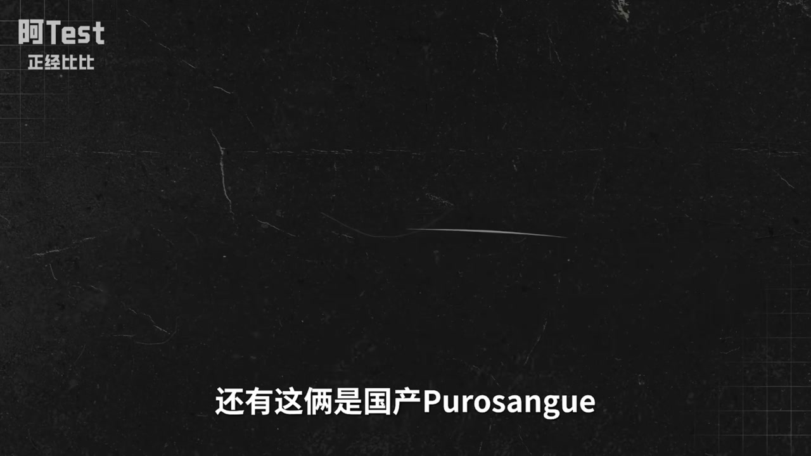
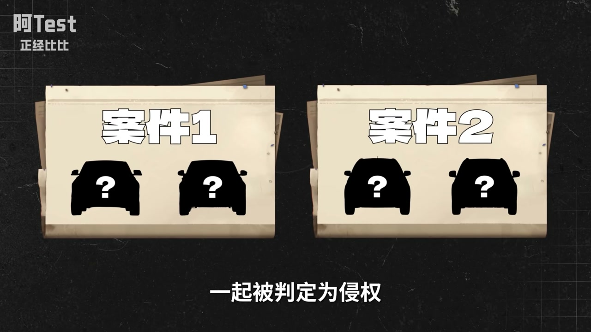
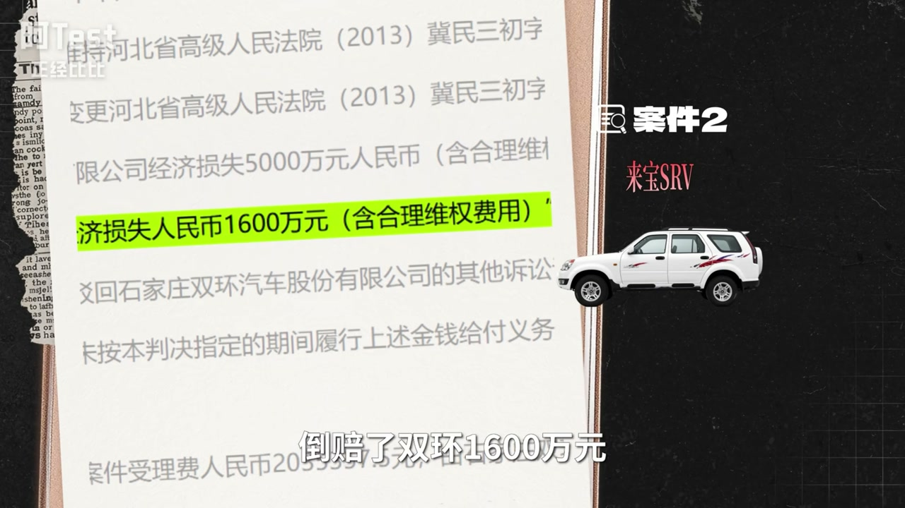
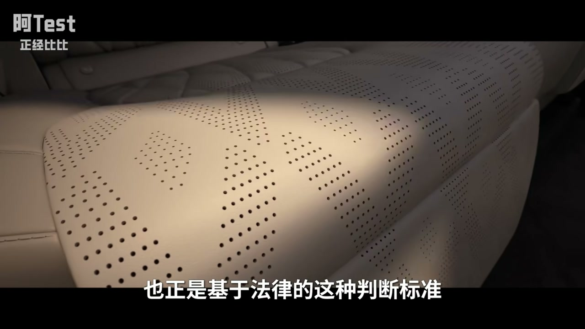
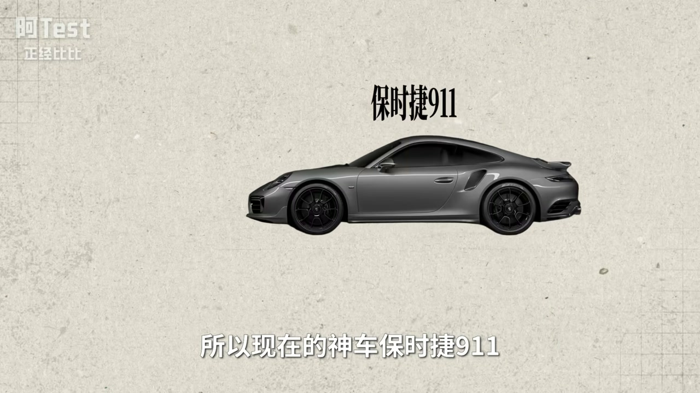
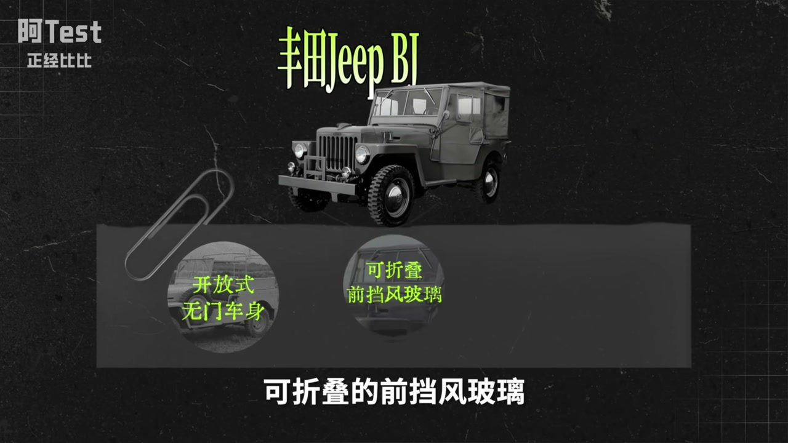
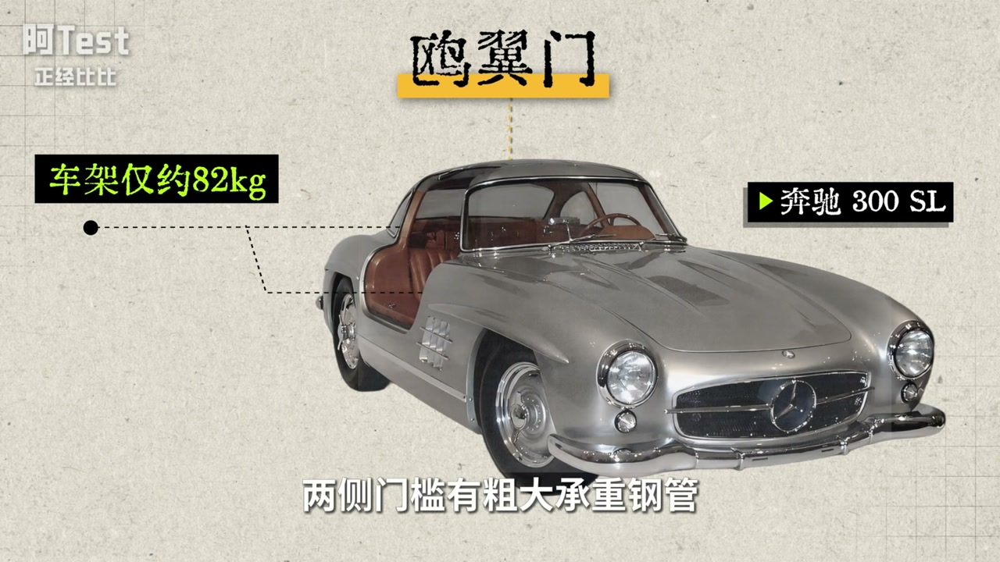
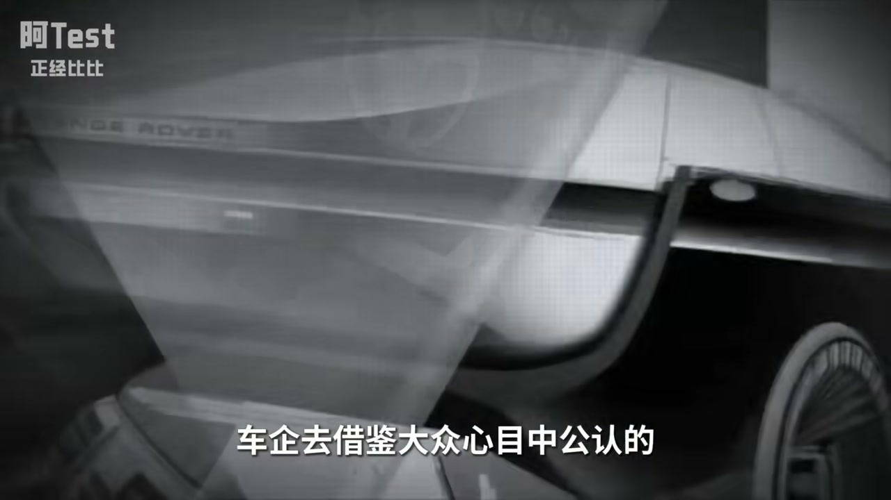
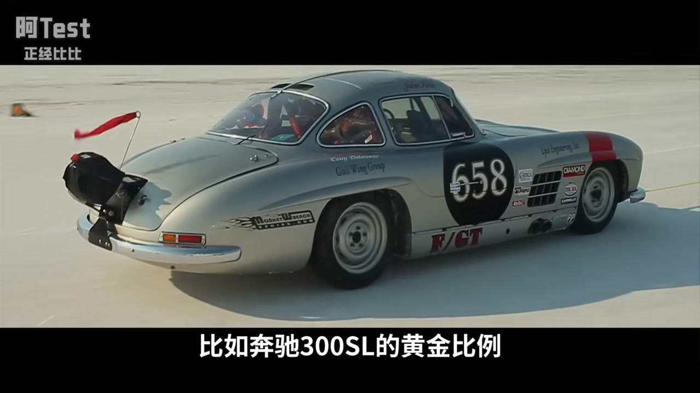

内容要点
开场把多款国产轿车侧面/前脸并列（小米 SU7、智界等），再并列方正 SUV，指出集体致敬保时捷 Taycan/Panamera、劳斯莱斯库里南、路虎卫士等。法律上「抄袭」常以侵害外观设计专利/著作权界定；陆风 X7 被判与极光整体无显著区别，双环来宝 SRV 却胜诉反赔本田。车企刻意在公共设计语言上趋同、在局部差异上规避。历史从 Tatra 97→甲壳虫→911，到丰田缝合怪、中国早期逆向，再到新能源「为鸥翼而鸥翼」。ASR 校正：保时捷 Taycan（非宝石街 Taken）、路虎（非鹿虎）、劳斯莱斯、陆风等。
知识结构
致敬矩阵；侵权 vs 不侵权的微妙判决。
风格公共化；保时捷也被超；日系/国产逆向。
好设计多为工程妥协；遗憾不敢原创与曝光效应。
越长越像是经营最优点：法律保护的是可识别的整体外观，不是「低趴溜背」这类气场；中国车用模仿完成补课合理，但下一阶段要用功能驱动的原创把「熟悉的高级」变成「自己的经典」。
00:00-04:50抠掉车标之后：致敬与侵权边界
多款国产轿车共享低趴溜背与「两边高中间低」前脸，SUV 共享方正隔栅与平直车顶；网友总结「国产卡宴/卫士…」。技术上座舱智能可弯道超车，外观却像下载同一素材包。
案件一：陆风 X7 与路虎极光——整体视觉无显著区别，局部九点不同不够，判侵权停售赔款。案件二：双环来宝 SRV 与本田 CR-V——多部件明显差异，不构成侵权，本田反被判不正当竞争。抄了不等于侵了，边界在整体观察。



04:50-11:50合法模仿：从戴森到 Tatra 护钞史
大风格（低趴宽体、方盒子）属行业公共资源；改细节或缝合即可。类比无扇叶吹风机、圆角矩形手机、乐高公母扣——底层形态难独占。保时捷中国高管称设计「激发高度统一审美」，罗永浩回怼其历史也抄：1936 Tatra 97 流线型后置风冷，甲壳虫高度相似，战后和解赔款，911 精神图腾可追溯至此。丰田早期缝合克莱斯勒/雪佛兰/甲壳虫/吉普；中国早期吉利/奇瑞/比亚迪/长城同样摸着石头过河。



11:50-17:45为抄而抄的遗憾与曝光效应
技术已超车仍模仿：强行拉长轴距比例失调、为鸥翼门而鸥翼（300SL 本是钢管车架工程妥协）。好车外观多来自功能——四轮稳定、流线降阻、方盒子路虎源于农用空间与成本。代表性启发让「长得像≈属性接近」，以形补形理性但可惜；高合等大胆原创难成规模。曝光效应：骂丑的造型看久成经典。结论：模仿完成中国速度，真正崛起应始于借光赶路、终于发光引路。



完整转录（530段）
以下文本由 Whisper 自动转录，可能存在识别误差；正文与导语已按语境校正专名与术语。
这四款轿车如果把车标抠掉
你们能分清谁是谁吗
从侧面看他们都有低趴的底盘
6倍spot back
整体比例很像
从正面看他们也都有两边高
中间低的车头
他们分别是小米苏7
上届Z7
启进GT7
腾式Z9GT
那为啥他们这么像呢
我猜他们组团致敬了
宝石街Taken和帕拉梅拉
然后我们再看这几款SUV
你们能分清谁是谁吗
他们都有方正的车头
直铺式隔山
全服式车顶
以及这种大柄轮毂
这四台车
依次是极客9X
蓝图泰山
红旗EHS-9
坦克800
那为啥他们也这么像呢
我猜他们也组团致敬了
老斯莱斯库里南
别急 还没完
按网友的说法
这些是国产卡宴
这些是国产卫视
还有这俩是国产不算胎鬼
以及这俩国产小G
那针对以上一夫一母的
各种亲兄弟车型
有人是这么总结的
留给国产车借鉴的车型不多了
这就奇怪了
现在的国产车
明明在很多技术上
已经弯道超车了
比如三店 座舱 智能化
都吊打国外品牌
但一套外观设计
就开始疯狂致敬了
大家就好像在网上
下载了同一套设计素材包
就非得逮着国外豪车
一顿猛超
当然不光国产车超国外
国外的车也超
法拉利旗下首款电动跑车
Ferrari Luce
一发布就被群潮响
苹果鼠标
车头奥迪
车尾萤火虫
侧面像i6
又有点像小鹏
如果去掉logo
你们敢相信这些台法拉利吗
看到以上越长越像的车
我就好奇了
超到底清不清全呢
以及人类是不是已经
设计不出新造型了
大家好
我是志祺
最牛的Rap Art太
今天就来聊聊
汽车设计
看看今天的汽车
为什么越长越像
背后是一笔怎样的经济帐
抄袭模仿致敬的边界在哪
国产车们能做出自己的原创吗
我先问一下各位的看法
你们觉得前面说的那些车
有没有抄袭保时捷和老斯莱斯
抄了的扣1
没抄的扣2
当然我们也得明确一下
抄袭这个词
法律上的抄袭
其实没有明确定义
它的诉讼中
经常会以侵害外观设计专利权
或侵害著作权来界定
不违法的抄叫借鉴
违法的抄叫侵权
为了弄清借鉴跟侵权的区别
我们看两起外观诉讼案件
一起被判定为侵权
一起没有被判定为侵权
先看案件1
2019年的江陵鹿峰X7和鹿虎极光
我们看鹿峰X7和鹿虎极光的外观对比
这个是正面对比
车标的字体是不是很像
车灯和隔山的造型是不是也很像
前脸下方的其他细节好像又不一样
保险杠造型也不一样
侧面也给大家看一下
整体线条很像
大灯的眼线几乎一样
车侧面的凹凸线条也几乎一样
但轮毂不一样
尾灯不一样
鲨鱼鳍的大小也不一样
你们觉得鹿峰X7侵权了吗
好先留个悬念
我们再看案件2
这两款车分别是2003年的本田CR-V
和双环来宝的SRV
所以名字上这俩就很像
第一眼你们觉得像不像
我觉得挺像的
尤其是这个车灯
外轮廓线条几乎一样
不过里面灯的布置又不太一样
前脸其他部分也不太一样
再看侧面
两个车整体线条很像
车窗布局也很像
甚至后排车门的车窗
也有同样的小窗
你们觉得第二个案件
双环来宝的SRV侵权了吗
觉得案件1里的鹿峰X7侵权的扣1
觉得案件2里的双环来宝SRV侵权的扣2
我说我的感受
肉眼上我认为这两案件没差
不管侵不侵权
反正都存在明显抄的痕迹
说没有参考借鉴
那都是骗鬼
只是两个案件的结果确实是截然相反
案件1 鹿峰X7在2016年被判侵权
结论是从整体上观察
鹿峰X7的专利与对比设计
在整体视觉效果上没有明显区别
虽然有九处不同点
但这些不同点均属于局部细节的改进
无法掩盖整体上的过于雷同
最终将临停售且赔钱给鹿峰
而案件2 法院判定双环来宝的SRV不构成侵权
它和本田CRV在倒车镜
车身线条 保险杠 前大灯 尾灯发动机罩
等部件存在明显差异
而且最后这个案子还反过来判本田不正当竞争
倒赔了双环1600万元
总之以上两个案件抄肯定是抄了
但侵不侵权的判定很微妙
而不仅是在中国市场层面
历史上全球范围内长得像的车型其实非常多
借鉴是整个行业的常态
但是关于汽车外观侵权的起诉也不算多
其中被起诉方能胜诉的就更少了
这是为啥呢
原因其实也很简单
车企们都不傻
他们会刻意规避侵权
玩一套合法模仿的擦边美学
我们从整体上会觉得车长得像
是因为低趴宽体姿态
溜背造型
圆润大灯这些大的风格方向是一样的
是因为方盒子平直车顶贯穿是腰线的设计风格
决定了一辆车的气场
但是这些设计风格层面的东西
它属于行业公共的设计资源
不是某家车企可以独占的专利
车企们只用在成熟设计风格的基础上
修改细节就可以了
甚至是缝合各家之常
这种经营策略在很多领域也都是常态
比如无扇叶吹风机
戴森搞出来之后
确实有外观专利
也有气流增强技术V型马达的专利
但这些后来者长得都差不多
底层技术也一样
因为康达效应高速无刷电机
环形出风这些技术谁都能用
再比如乔布斯的初代iPhone
用的大屏幕加触屏加圆角矩形机身
这种手机形态是iPhone跑通的
但后来的手机厂商也能做
包括裹甩机目跟乐高用一样的拼接尺寸
公母扣结构
甚至连塑料的质感都可以无限接近
这些都不构成侵权
除非你山寨乐高的套装才算侵权
所以外观设计上的知识产权保护
本质上是在鼓励原创和防止垄断中间找平衡
既保护你原创的东西
又不想让你被过于保护了
只有找到这种平衡
才能鼓励企业去原创去创新
也能让整个行业都因为某些企业的创新
而整体快速发展
也正是基于法律的这种判断标准车企之间
抄来抄去
就成了公司经营的最优点
这种抄在历史上也已经发生过无数次
保时捷也不例外
今年5月
保时捷中国高管在面对中国车的集体致敬时
来了句高级凡尔赛说
过去的几年里面
保时捷的设计确实是激发了中国汽车行业
一个高度统一的汽车设计审美
结果罗永浩在微博上反手把保时捷作分抛了
说保时捷历史上也没少抄
那保时捷抄了谁呢
回去扒了一下
这辆车是1936年捷克斯洛伐克神车TATRA97
这车在当年是啥水平呢
堪称外星科技
流线型水滴车身
透支2.9升风冷V8发动机
最高时速直奔160公里
是当时全世界最快的量产车之一
这车之前的主流车长啥样呢
他们都是前置发动机
三段阶梯式车身
不管是美国的别克
法国的Hisspanel
还是英国的劳斯莱斯
大概都是这样的汉
可以说捷克斯洛伐克的TATRA97
把流线型车身后置风冷发动机的车
成功量产了
产品也被市场验证了
然后仅仅一年后
未来更知名的大众甲鸽问世了
同样的流线型圆润身材
同样的后置风冷发动机
这一对比你能说甲鸽没抄吗
我是不信的
甲鸽的设计者费迪南德保时捷
跟TATRA的设计师是好朋友
两人经常一起喝酒聊技术
老保时捷后来也坦白了
有时候我看看他的设计
有时候他也看看我的
然后看着看着
就把人家TATRA的设计看回了家
1938年TATRA起诉大众甲鸽侵权
然后戏剧性的来了
第二年二战爆发了
德国占领了捷克
诉讼被迫中断了
TATRA97也停产了
这事一直到战后才有结果
大众选择庭外和解
赔了100万希德马克
所以现在的神车保时捷911
作为保时捷的精神图腾
其经典的后置风冷发动机
青蛙眼流线型线条
不只是继承自大众甲鸽
组上还得追溯到TATRA97
当然不光保时捷超
前面说的四款30年代的车
怎么也那么像呢
而且备胎都统一放在了
前轮的后上方位置
所以说汽车发展史
也可以说就是一部设计护钞史
20世纪30年代
通用推出全新流线型设计的LASA
克莱斯勒推出了L-FLOW
然后整个美国都不做方盒子了
整个美国的车都跟进了
这两款车的流线型设计
四五十年代
凯迪拉克从洛西德P38
闪电战斗机的双维翼获得灵感
在1948款Series 62上
首次用了极其夸张的垂直尾骑
并把尾灯嵌入其中
然后这个设计瞬间引爆全球审美
全球车市进入长达10年的
尾骑大抄袭时代
比如1957年英国沃克斯豪尔
推出的Krest PA
1959年奔驰的奔驰S级
1959年日产推出的达特桑蓝鸟
1960年法国标志
推出的标志404
都借进了美式尾骑设计
而如果说欧美之间
还算含蓄借鉴的话
那日本车企的崛起
就是明目张胆的逆向工程
就拿今天全球汽车销灌丰田来说
在当年那是妥妥的山寨之王
1936年
丰田推出的第一款量产轿车
丰田AA
只能说是一台超级缝合怪
它在外观上抄了克莱斯勒的Airflow
发动机抄了雪弗兰Stovebolt直列六缸
而且由于抄的过于逼真
丰田AA和雪弗兰Stovebolt的发动机气门
活塞连杆等部件
甚至可以通用
底盘则抄了福特标准的T型大梁底盘车架
到1947年
丰田推出SA又改抄欧洲了
它除了外形不同外
几乎是大众甲铳的翻版
车架也换成了甲铳标志型的
中央挤粮式车架
后来这套底盘技术被丰田吃透
还用到了丰田跑车2000GT身上
那1951年推出的丰田JPBJ
也就是今天越野神车陆地巡洋舰的鼻祖
当年它为战争设计的开放式无门车身
可折叠的前挡风玻璃分十四区
都是复刻的威利斯吉普
当然还有今天被国产车排着队致敬的劳斯
日本人1967年就先致敬为敬了
当年为了彰显顶级身份而诞生的丰田世纪
前长后短的雪茄车身
双色定制车漆处处透着劳斯味
总之日本汽车的崛起主打一个不挑食
抄完美国抄欧洲 谁强抄谁
时间到了90年代
中国汽车呢
中国汽车不抄吗
当然得抄
同样的剧本又交到了中国手里
老一代造车人们在那个
没有技术没有资金的蛮荒年代
不得不重新走一遍
当年日系车逆向研发的老路
像吉利豪行摸着天津夏利和大发史瑞的过河
齐瑞QQ靠着酷似大雨Mattys的呆萌外形一炮而红
比亚迪F3模仿了丰田花关
长城赛福则借鉴了丰田4Runner
没有谁是完全纯洁的
这是商业故事
这是企业经营
这是任何一个产业蓬勃发展的必经过程
复刻逆向研发付费引进
这些才是成本最低速度最快的技术积累方式
他们本质上是站在巨人的肩膀上
快速补齐基础课
而在一开始就闭门造车自主研发
只会早早夭折
大家都是摸着前人的石头过河
直到自己也变成了被别人摸的那块石头
那么问题又来了
今天是2026年了
国产电车技术已经超车了
都已经成了传统车企的学习对象了
为啥还要抄呢
甚至有些东西是为抄而抄
十年前有很多国产车模仿保时捷卡验
或者这么看
为了造型上相似
把轴距车高强行拉长
但底盘配不上
整体比例就不对
然后搭载普通1.5T发动机
强行小马拉大车
性能表现还不如坐一辆小车
新能源时代
还有以Model X为代表的一系列车
喜欢模仿奔驰的OE门
当时1952年的300SL赛车之所以弄OE门
根本不是为了造型
而是工程妥协
因为车身坐得轻
两侧门槛有粗大承重钢管
不能坐传统侧开门
是不能坐传统车门
才想办法坐的OE门
结果新能源车
为了OE门而OE门
反而导致开门很容易刮蹭旁边
或者是天花板
车门那里也不能放东西
当然还有故障率高的问题
以及可能因为夹上车红衣而翻车的问题
所以汽车外观的变化
在历史上多数都是出于实用性的考量
比如后来的车都是四个轮子
而不是最早奔驰一号的三个轮子
不是四个轮子更好看
而是四个轮子更稳
比如流线型车身
也不是出于审美的考虑
而是因为它能降低风阻
降低能耗
法拉利的不算太贵
它车头很长
不是因为什么黄金比例
而是它得放进一台6.5升V12发动机
包括前面提到的神车TATRA97
为什么要用后置风冷发动机
是因为捷克斯洛伐克冬天又冷又长
偏远地区缺少防冻液维修站
风冷比水冷更适合
对 还有方盒子
鹿虎为什么是方盒子
因为它最早的定位根本不是什么豪华SUV
而是干粗活的农用工具车
方形车身的空间利用率更高
造车成本和维修成本也更低
他们的原创设计
都不是为了设计而设计
更不是为了抄谁
而是在功能导向的前提下
做出的最优设计甚至是妥协
所以近些年一些国产车企
显然搞错了方向
却让很多网友调侃
他们把车头做长
是因为法拉利车头长
他们做无按键
是因为特斯拉无按键
但家用车做长车头真的好吗
无按键无挡杆真的好吗
这些问题先不管
用户就喜欢这些成功车型的设计
确实 人这种生物
在认知世界的时候是有认知洁净的
人会把外观和实质强绑定
长得像等于属性接近
这在心理学上一个代表性启发
所以汽车也是可以以形补形的
车企去借鉴大众心目中
公认的豪车跑车
当然是理性的合理的
我也完全理解车企们
为什么在外观上要模仿
而很少大胆原创
没必要 确实没必要
这个问题我理解
但是我还是觉得很遗憾
就是中国车企现阶段
不只是不想原创
更多是不敢原创
在过去几年里有一款
车我印象很深刻
高和的Hi-Fi X
这车在2021年搞了个
免触摸人脸识别开门
全车无门把手
数字化灯光体系是国产首创
外形更是跟高达似的
哪怕站在现在来看
这车也过于创新了
而作为一个新品牌
售价在50万以上
高和的销量不算惨淡
其实是正常的
高和也没做错什么
但最终停工停产
我们不管它这么造车
从商业上合不合理
我觉得任何尝试突破的创新
都是值得被尊重的
只是市场确实是残酷的
这车的销量不足以支撑
它形成规模效应
也不能打败它的对手
所以还是很遗憾
现在的国产车
我觉得还是不够自信
国内的市场
也还没有那个能自信的环境
虽然现在的国产车
早就没有那些
早年廉价别缴的造型了
但取而代之的是
统一千篇一律的高级
我们不得不承认
千篇一律的高级也是高级
它起码拉高了
整个国产车的审美底线
让我们普通人用
十几万二十几万的预算
也能享受到豪车级别的
气场和设计红利
但一直去模仿别人的造型
真的就好看吗
真的就高级吗
什么是好看
什么是高级
它固然有一定的客观规律
比如奔驰300SL的黄金比例
节爆e-type的完美连续曲线
人天生喜欢简洁对称
比例好的东西
但是更多时候
好看是一种熟悉感
心理学上叫曝光效应
也就是一个设计
只要它不是特别丑
我们对它的好感度
就会随着接触次数增加而提升
这样人们常说的
有些人五官不算惊艳
但越看越顺眼
这样保时捷的挖眼大灯
特斯拉model3的无疑表盘
iPhone10的刘海平
AirPods的吹风机造型
一开始他们也被人骂丑
但看久了
人们也能接受它
甚至能成为经典造型
可能每一个好看的设计
都是从对旧世界的突破开始的
我们承认
中国汽车工业
用40年走完了西方100年的路
没有模仿
就没有这种中国速度
更没有中国汽车的今天
任何后发国家的工业发展
都离不开模仿阶段
但真正的工业崛起
应该始于借光赶路
终于发光引路